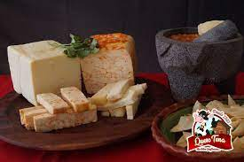
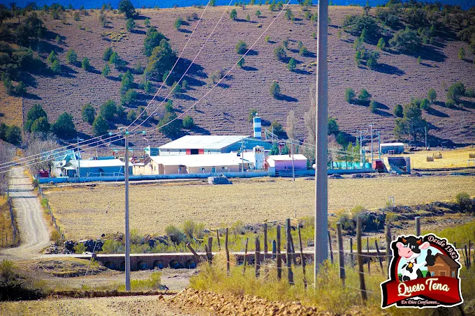

La mejor selección de quesos artesanales.
En Quesos Tena, nos dedicamos a la producción de quesos artesanales desde hace más de 40 años. Nuestra calidad, respetando las tradiciones y el medio ambiente.
Dirección: 31693 La Tena de Arriba, Chih. Carretera Cuauhtémoc-LaJunta
Horario: Lunes a Sábado de 8:00 a 16:00